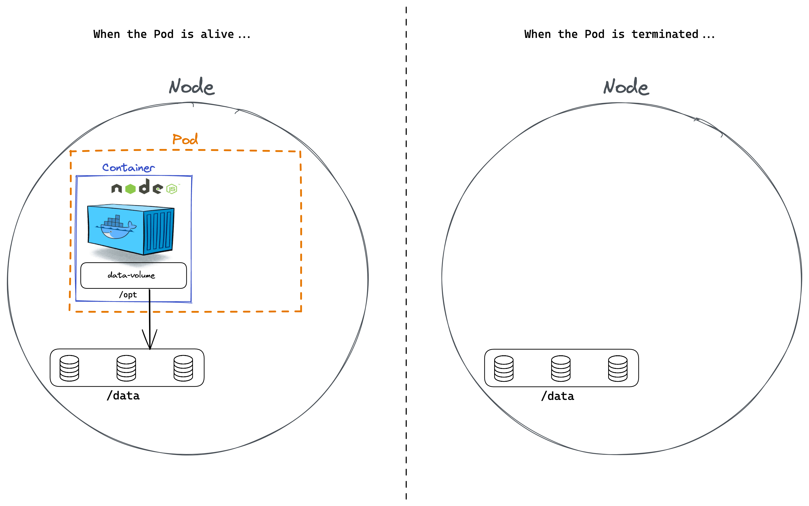
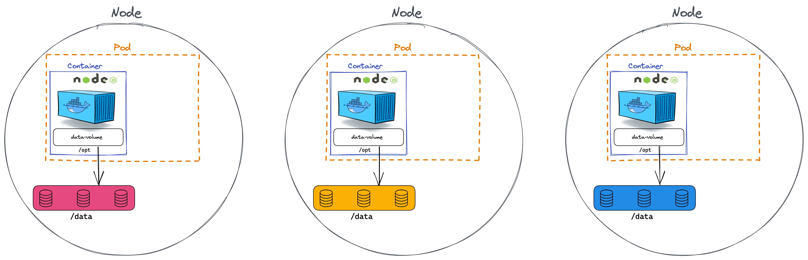
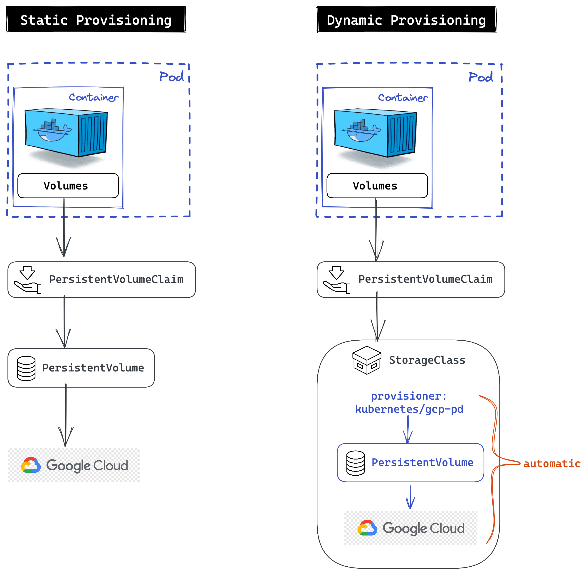

7.容器数据的可持久化
1. 卷（Volume）¶
Docker 容器本质上是 瞬态（transient） 的。 这意味着它们只能持续很短的时间。它们在App被创建时被调用，容器被销毁时，数据与容器一起被销毁。
为了使容器的数据持久化，我们将容器所在的 Pod 连接到卷。 容器中的数据放在该卷中，即使容器被删除，数据会仍然存在。
下面的yaml文件为Pod创建并连接卷：
- Container：其中的App随机生成一个0-100之间的数，并存到文件夹
/opt中 - Volume：该卷名为
data-volume，实际上是当前Node上的一个文件夹/data。所有用卷data-volume存储的信息，最后都会被放在Node的/data文件夹下
# pod.yaml
apiVersion: v1
kind: Pod
metadata:
name: simple-webapp
spec:
containers:
- name: simple-webapp
image: simple-webapp
command: ["/bin/sh", "-c"]
args: ["shuf -i 0-100 -n 1 >> /opt/number.out;"]
volumeMounts: # (1) 将容器文件夹`/opt`挂载到名为data-volume的卷上
- mountPath: /opt # Container内部文件系统中的文件夹名
name: data-volume # Volume的名字
volumes: # (2) 创建卷：这里申明了一个在Node上的文件夹，也可以使用其他存储方式，比如引用（PVC）
- name: data-volume # Volume的名字
hostPath:
path: /data
type: Directory

上面图中的的挂载方法只适用于单Node的集群。如果是多个Node，那么每个Node其实都是不同的服务器，它们都有的/data文件路径，分别存储了不同的内容。所以我们要另找解决方法。

- 卷与Pod相连 -> 每次新建一个需要存储空间的Pod，都需要手动配置卷
- 卷存在于Node服务器上 -> 分布在不同Node上的App无法访问到同一个的卷
- 卷的这两个特性导致管理困难，而且也不利于扩大应用规模，因为无法支持多Node的应用，而持久卷能解决该问题
2. 持久卷（PersistentVolume / PV）¶
我们想要一个更中心化的解决方法，如有某个多Node的应用需要修改存储空间，管理员（Administrator）可以统一对其进行管理。持久卷池可以帮我们解决这个问题。
持久卷是Cluster层级的，放满 存储卷 的池子（Pool），由集群的管理员进行管理和配置。然后由Pod根据自己的需求发送 存储卷请求（PersistentVolumeClaim / PVC）。
⚠️ 一个PV本身是不可分割的单位，而管理员管理的是一堆存储容量大小各异的PV
# 持久卷（PersistentVolume）的定义
# my-pv.yaml
apiVersion: v1
kind: PersistentVolume
metadata:
name: pv-volume
spec:
accessModes: # 可能的mode： ReadOnlyMany, ReadWriteOnce 和 ReadWriteMany
- ReadWriteOnce
capacity: # 所需的存储空间的大小
storage: 1Gi
hostPath: # 卷的类型：Node（主机）上的文件夹 - 不推荐
path: /tmp/data
kubectl create -f my-pc.yaml
kubectl get persistentvolume
持久卷的类型¶
当我们在pod.yaml中定义volumes属性时，有很多不同选择。比如：NFS、ClusterFS、Flocker、FibreChannel、CephFS、ScaleIO 或公共云解决方案，如AWS EBS， Azure， Google Persistent Disk，或者AWS Elastic Block Store。
- AWS Elastic Block Store：
volumes:
- name: data-volume
awsElasticBlockStore:
volumeID: <volume-id>
fsType: ext4
awsElasticBlockStore：AWS Elastic Block Store (EBS)azureDisk：Azure DiskazureFile：Azure Filecephfs：CephFS volumecsi：Container Storage Interface (CSI)fc：Fibre Channel (FC) storagegcePersistentDisk：GCE Persistent Diskglusterfs：Glusterfs volumehostPath：HostPath volume (for single node testing only; WILL NOT WORK in a multi-node cluster; consider using local volume instead)iscsi：iSCSI (SCSI over IP) storagelocal：local storage devices mounted on nodes.nfs：Network File System (NFS) storageportworxVolume：Portworx volumerbd：Rados Block Device (RBD) volumevsphereVolume：vSphere VMDK volume
3. 持久卷申领（PersistentVolumeClaim，PVC）¶
在定义了Cluster上的PersistentVolume之后。Pod需要发送PVC请求，以拿到试用PV的许可
概念整理
- PV：由 管理者（Administrator） 配置的存储空间
- PVC：由Pod的 用户（User of Pod） 发出的“想要使用一部分存储空间“的请求
# my-pvc.yaml
apiVersion: v1
kind: PersistentVolumeClaim
metadata:
name: my-claim
spec:
accessModes:
- ReadWriteOnce
resources: # 所需资源
requests:
storage: 500Mi
kubectl create -f my-pvc.yaml
kubectl get persistentvolumeclaim
apiVersion: v1
kind: Pod
metadata:
name: mypod
spec:
containers:
- name: myfrontend
image: nginx
volumeMounts:
- mountPath: "/var/www/html"
name: mypd
volumes:
- name: mypd
persistentVolumeClaim: # 使用PVC
claimName: myclaim
PVC如何选择PV¶
1. 根据属性选择¶
Kubernetes 尝试根据PVC的要求找到具有足够容量的PV。PVC可以定义存储容量（sufficient capacity），访问模式（access modes）、卷模式（volume modes）、存储类（storage class）等属性。如果有多个PV符合PVC的要求，则随机选择一个PV。
2. 根据selectors和labels选择¶
当然，如果想要绑定到特定的PV，也可以利用labels和selectors来定位到正确的PV。比如：
1. Pod中添加selectors属性
# pod.yaml
selector:
matchLabels:
name: my-pv
labels属性
# pv.yaml
labels:
name: my-pv
3. 特例¶
最后，如果所有所有属性都匹配，且没有更好的选择，则较小的PVC最终可能会绑定比它要求更大的PV。
--> 这可能导致PV的浪费！
假设我们有一个PVC和一个PV。PVC要求的存储空间是500Mi，而现在可用的PV只有一个，那么PVC只能绑定到剩下的PV。用k get pvc可用看到：
NAME STATUS VOLUME CAPACITY ACCESS MODES STORAGECLASS AGE
my-claim Bound my-volume 1Gi RWO aws-xxx 40m
4. 没有可用的PV时，PVC的行为¶
如果当前的Cluster中，没有可用的PV，那么发出的PVC会一直处于Pending的状态。这时用k get pvc会看到：
NAME STATUS VOLUME CAPACITY ACCESS MODES STORAGECLASS AGE
my-claim Pending vpc-block-1iops-tier 35h
Pending状态的PVC会自动与新的PV完成绑定！
4. 删除PVC¶
删除PVC：
k delete pvc/my-claim
Retain: 被绑定的PV会依旧存在，没有被删除，除非Administrator手动删除。但该PV也无法被其他PVC使用。此时PV的Status会是“Released”，而不是“Available”。Delete: 被绑定的PV也会自动被删除，由此，Cluster的整体存储池总体容量会变小Recycle: 被绑定的PV被回收利用，PV上的数据会被删除，且可供其他PVC使用，Cluster的整体存储池总体容量会不变
你可以在YAML中定义：
apiVersion: v1
kind: PersistentVolume
metadata:
name: pv-volume
spec:
accessModes:
- ReadWriteOnce
capacity:
storage: 5Gi
awsElasticBlockStore:
volumeID: xxx
fsType: ext4
persistentVolumeReclaimPolicy: Recycle # 对PV的行为进行规定："Retain", "Recycle", 或 "Delete"
5. 存储类 / Storage Classes¶
假设我现在想使用GCE的存储空间，那么需要4个步骤：
- 在GCE中新建存储空间
- 创建一个使用GCE空间的PV
- 创建一个PVC，对PV进行时使用
- 在Pod中使用引用PVC
这个过程被称作 Static Provisioning。我们可以通过创建存储类 / Storage Classes来自动化步骤（1）和（2），实现“Dynamic Provisioning” 。Static和Dynamic Provisioning的区别如图：

1.创建一个存储类 / StorageClass
# my-sc.yaml
apiVerson: storage.k8s.io/v1
kind: StorageClass
metadata:
name: google-storage
provisioner: kubernetes.io/gce-pd # 配置器：不同供应商提供不同的配置器
VolumeBindingMode: WaitForFirstConsumer
parameters: # 配置额外的参数
type: pd-standard
replication-type: none
provisioner
注意，kubernetes提供了多个provisioner，为每个云供应商都提供了provisioner，kubernetes.io/gce-pd是给 GoogleCloudEngine 的provisioner
是如果provisioner是kubernetes.io/no-provisioner，那么意味着该StorageClass不支持 dynamic provisioning
绑定模式/VolumeBindingMode
可能的值：
WaitForFirstConsumer: 将延迟 PV 的绑定和配置，直到创建使用了对应 PVC 的 PodImmediate
2.创建一个PVC, 使用StorageClass
# my-pvc.yaml
apiVersion: v1
kind: PersistentVolumeClaim
metadata:
name: my-claim
spec:
accessModes:
- ReadWriteOnce
storageClassName: google-storage
resources:
requests:
storage: 500Mi
storageClassName连接到StorageClass，StorageClass中的 配置器/provisioner 来配置新的GCE磁盘，并且自动生成一个相对应的PV
3.在Pod中使用该PVC
6. Stateful Set¶
Stateful Set 类似于 Deployment，因为它们基于模板创建 Pod。 他们可以增加和减少Pod的数量。 也可以执行滚动更新和回滚，但存在差异：
Stateful Set 中 Pod 是按顺序创建的。 部署第一个 Pod 后，它必须处于运行和就绪状态，才能继续部署下一个 Pod 。 Stateful Set给每一个创建的Pod都按照生成顺序编号，并根据编号生成独一无二的名字，比如：sql-1，sql-2
# Stateful Set的定义文件和Deployment大同小异，主要把 kind的类型改了
apiVersion: apps/v1
kind: StatefulSet
metadata:
name: mysql
spec:
template:
metadata:
labels:
app: mysql
spec:
containers:
- name: mysql
image: mysql
replicas: 3
selector:
matchLabels:
app: mysql
serviceName: mysql # 声明要使用的 Headless服务
kubectl create -f my-ss.yaml
⚠️ StatefulSet被删除时从后往前删
Headless Service¶
不做loading balance，只提供DNS的服务。与StatefulSet一起使用时，为每一个Pod都提供一个DNS，格式为：<pod-name>.<headless-service-name>.<namespace>.<cluster-domain>比如：
mysql-0.mysql-headless.default.svc.cluster.localmysql-1.mysql-headless.default.svc.cluster.localmysql-2.mysql-headless.default.svc.cluster.local
apiVersion: v1
kind: Service
metadata:
name: mysql-headless
spec:
ports:
- port: 3306
selector:
app: mysql
clusterIP: None # Headless服务与其他服务区分开来的地方
- 手动创建Pod
- 通过StatefulSet创建Pod
1. 手动创建Pod¶
apiVersion: apps/v1
kind: Pod
metadata:
name: myapp-pod
spec:
containers:
- name: mysql
image: mysql
subdomain: mysql-headless # 1. subdomain = 服务名字
hostname: mysql-pod # 2. hostname 确保每个Pod都有各自的DNS
2. 通过StatefulSet创建Pod¶
如之前的例子所示，需要加一个serviceName即可
>>> 本章kubectl命令整理¶
PersistentVolume相关
k get pv
PersistentVolumeClaim相关
k get pvc
k delete pvc/my-claim 删除pvc
图片来源¶
Database icons created by phatplus - Flaticon Folder icons created by Good Ware - Flaticon